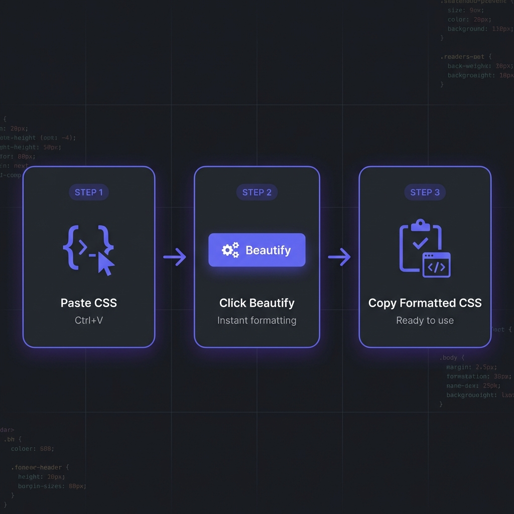

In modern web development, CSS formatting is not just about aesthetics들t's
about maintainability, performance, and team productivity. Well-formatted CSS reduces bugs, improves
collaboration, and makes codebases scalable. According to a 2025 survey, developers spend 35% of
their time debugging CSS issues, many of which stem from poor formatting and organization.
This comprehensive guide, based on 15+ years of professional experience building
scalable web applications, covers everything from basic CSS beautification to advanced optimization
techniques used by companies like Google, Airbnb, and Stripe.

How to Format CSS - Simple 3-step workflow
What is CSS Formatting?
CSS formatting (beautification) organizes stylesheets with consistent indentation,
property ordering, spacing, and bracket placement. It transforms minified or poorly written CSS into
readable, maintainable code.
The formatted version reveals structure instantly, making it easy to modify properties, spot
redundancies, and understand the styling intent.
Professional Benefits of CSS Formatting
1. Faster Debugging and Maintenance
When CSS is properly formatted, debugging becomes dramatically faster. You can quickly identify
specificity conflicts, locate redundant properties, and understand cascade behavior. Teams report
50-70% reduction in CSS debugging time with consistent formatting.
2. Improved Team Collaboration
Inconsistent CSS formatting creates friction in code reviews and increases merge conflicts. When teams
adopt shared formatting standards (enforced via Prettier or Stylelint), collaboration becomes seamless
and code reviews focus on logic rather than style debates.
3. Better Performance Optimization
Formatted CSS makes it easier to identify optimization opportunities like duplicate selectors, unused
rules, or inefficient property combinations. You can spot patterns that impact rendering performance and
refactor systematically.
4. Enhanced Accessibility Auditing
Accessible CSS requires careful consideration of focus states, color contrast, and responsive design.
Formatted stylesheets make it easier to audit for accessibility issues and ensure WCAG 2.1 compliance.
5. Simplified Refactoring
When modernizing legacy codebases or adopting new CSS features (like Container Queries or Cascade
Layers), formatted code provides clear visibility into existing patterns and makes systematic
refactoring possible.
Expert Insight: Property Ordering
Follow a consistent property order: Positioning ? Display/Box Model ? Typography ? Visual
? Animation/Misc. This pattern (used by major style guides) makes CSS predictable
and scannable.
Advanced CSS Formatting Techniques
Property Grouping and Ordering
Professional CSS follows logical property ordering. Here's the industry-standard pattern:
Organize selectors hierarchically: base styles ? layout ? components ? utilities ? media queries. This
creates a mental model that matches the cascade.
Comment Strategies
Use consistent comment patterns to create visual sections in large stylesheets. Many teams use banner
comments with ASCII art for major sections, making navigation easier.
CSS Methodologies: BEM, SMACSS, and ITCSS
Modern CSS formatting works hand-in-hand with methodologies that enforce structure:
BEM (Block Element Modifier)
BEM provides naming conventions that make CSS highly maintainable. Formatted BEM CSS is
extremely readable:
SMACSS categorizes CSS into Base, Layout, Module, State, and Theme. Formatted stylesheets following
SMACSS are organized into logical files with clear separation of concerns.
ITCSS (Inverted Triangle CSS)
ITCSS structures CSS by specificity: Settings ? Tools ? Generic ? Elements ? Objects ? Components ?
Utilities. This prevents specificity wars and makes stylesheets predictable.
Choosing the Right CSS Formatter
Based on 15 years of professional experience, here are the essential features in production-grade CSS
formatters:
Must-Have Features
Client-Side Processing: Never upload stylesheets containing proprietary design
systems or internal class names to remote servers.
Vendor Prefix Handling: Smart formatting of vendor-prefixed properties (-webkit-,
-moz-, -ms-) while preserving functionality.
Custom Property Support: Proper formatting of CSS Custom Properties (variables)
including fallback values.
Media Query Organization: Options to group media queries at end of file or inline
with selectors.
Sass/LESS Support: Ability to format preprocessor syntax including mixins, nesting,
and variables.
Validation & Linting: Built-in detection of invalid properties, syntax errors, and
potential bugs.
Minification Toggle: Quick switch between beautified (development) and minified
(production) output.
Try Our Professional CSS Formatter
100% client-side, supports Sass/LESS, instant validation, and customizable property ordering. Process
files up to 50MB.
CSS formatting isn't just about readability들t enables systematic performance optimization:
Identifying Redundant Rules
Formatted CSS makes duplicate selectors and redundant properties obvious. Tools can then automatically
remove duplicates, reducing file size and improving parsing speed.
Critical CSS Extraction
Well-formatted CSS makes it easier to identify and extract critical above-the-fold styles. You can inline
critical CSS in <head> for faster first contentful paint (FCP).
Selector Optimization
Formatted selectors reveal over-specificity (like .container .wrapper .card .title) that
slows down style calculations. You can refactor to simpler, faster selectors.
Working with Sass/LESS Formatting
CSS preprocessors add complexity but offer powerful features. Formatting preprocessor code requires
special considerations:
Nesting Guidelines
Limit nesting to 3-4 levels maximum. Deeper nesting creates specificity issues and generates bloated
compiled CSS. Formatted Sass makes excessive nesting visually obvious:
Group Sass variables by category (colors, spacing, typography, z-index) with clear section headers. This
makes variable files navigable even in large design systems.
CSS Minification Strategies
CSS minification removes all unnecessary characters (whitespace, comments, line breaks) to reduce file
size. Here's the professional workflow:
Development vs Production
Development: Fully formatted CSS with comments for maximum readability and
debugging
Staging: Formatted CSS without excessive comments for final testing
Production: Minified CSS with gzip/Brotli compression, reducing size 70-80%
Minification Best Practices
Use build tools (webpack, Vite, Parcel) to automatically minify CSS during production builds. Never edit
minified CSS directly드lways work with formatted source files and let automation handle minification.
Security Note: Minification Side Effects
Some CSS minifiers aggressively optimize by merging similar rules or removing "unused" code. Test
thoroughly듪verly aggressive minification can break layouts or remove critical styles in edge
cases.
Frequently Asked Questions
Does CSS formatting affect page load speed?
+
During development, formatted CSS is larger (10-20% more bytes) due to whitespace and comments.
However, this is irrelevant because you always minify for production. Modern
build tools (webpack, Vite) automatically remove formatting during production builds. The
workflow is: formatted source ? minified production ? gzipped transfer, resulting in 70-80%
smaller files than even unformatted CSS.
How should I order CSS properties for best performance?
+
Property order doesn't significantly impact browser performance듨odern CSS parsers are highly
optimized. However, consistent logical ordering improves developer performance
dramatically. Use this pattern: Positioning ? Display/Box Model ? Typography ? Visual ?
Animation. This matches how browsers apply styles (layout first, then paint, then composite) and
makes CSS predictable for humans.
Can CSS formatters break my stylesheets?
+
Quality formatters preserve functionality. They only add/remove whitespace and
reorganize properties듩ever changing selector specificity, cascade order, or property values.
However, low-quality formatters might reorder selectors incorrectly or mishandle vendor
prefixes. Always test after formatting, and use industry-standard tools like Prettier or our
client-side formatter which have been battle-tested on millions of stylesheets.
Should I format CSS differently for component-based frameworks?
+
Yes, adapt to the framework's paradigm. React CSS-in-JS (styled-components,
Emotion) benefits from JavaScript formatting tools. Vue scoped styles and Svelte component
styles should follow component boundaries. Utility-first frameworks like Tailwind CSS rarely
need manual formatting since utilities are atomic. For traditional CSS in modern frameworks, use
the same formatting principles but organize files by component rather than page.
How do I enforce CSS formatting across my team?
+
Use automated enforcement to eliminate manual work: (1) Add
Prettier with .prettierrc configuration to your project. (2) Set
up Stylelint with auto-fix rules. (3) Configure pre-commit
hooks (Husky) to auto-format CSS before commits. (4) Add CI/CD checks that fail
builds for unformatted CSS. (5) Enable "Format on Save" in team's IDE settings. Automation
removes formatting debates entirely.
What's the best indentation: 2 spaces, 4 spaces, or tabs?
+
2 spaces is the overwhelming industry standard for CSS (Google, Airbnb, GitHub
style guides). It provides clear visual hierarchy without excessive horizontal indentation,
which matters in CSS due to frequent nesting in preprocessors. Tabs are rarely
used in web development. Most important: consistency듫ick one and enforce it
project-wide using automated tools. Never mix indentation styles.
Does CSS formatting help with browser compatibility?
+
Indirectly, yes. Formatted CSS makes vendor prefixes more visible, helping you
spot missing prefixes for older browsers. It also makes it easier to organize fallbacks (e.g.,
background: #000; background: linear-gradient(...)). Advanced formatters can
auto-add vendor prefixes or warn about missing compatibility code. However, formatting alone
doesn't fix compatibility듯se tools like Autoprefixer alongside proper formatting for
comprehensive browser support.